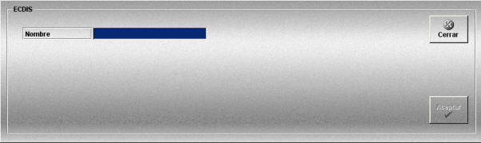

ECDIS
La creación y edición de consolas ECDIS se realiza mediante la siguiente ventana.

Esta ventana permite definir las consolas ECDIS que podrán ser añadidas a las unidades participantes en los Ejercicios.
Sólo se incluye el nombre, no es necesario especificar ningún dato adicional para este equipo.